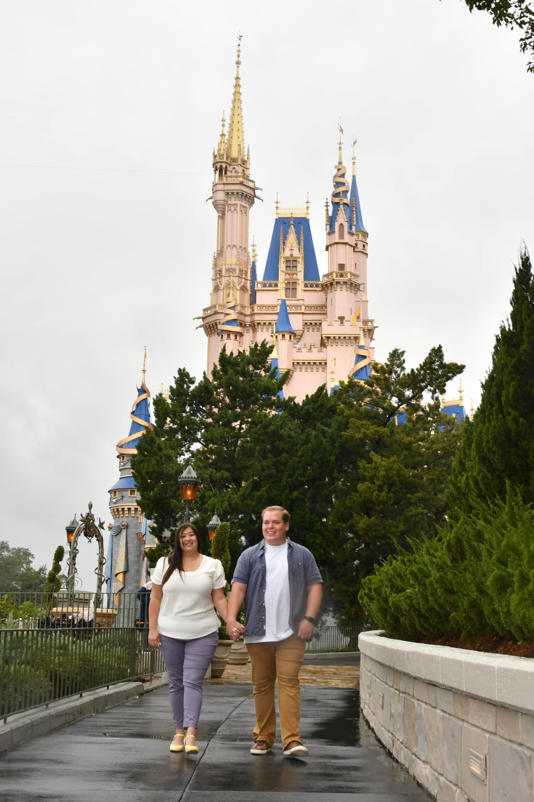

Frequently Asked Questions

Is the ceremony inside or outside?
The ceremony will be set up outside at the gazebo next to the station center where the cocktail hour and reception will be. It is located right next to the parking lot and is extremely easy to find.
Is there a dress code?
There is no specific dress code, but we do ask to refrain from wearing shorts or jeans!
When is the best time to arrive?
We recommend arriving by 4:50pm in order to arrive with enough time to find a seat before the ceremony begins!
The ceremony itself will start at 5:00pm and cocktail hour will immediately follow.